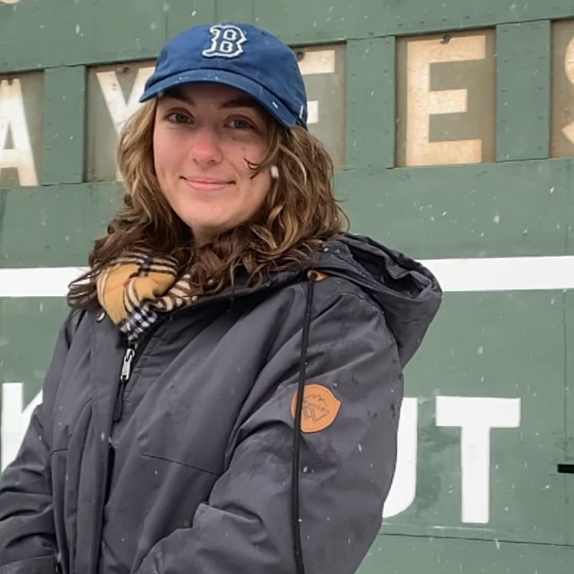

I am currently a computer science, math, and interdisciplinary making student in Smith College's class of 2025. My work focuses on making as a liberatory practice, particularly with regards to (dis)ability and queer liberation. I approach this subject both from a theoretic, academic perspective and through the concrete practice of making, often with robotics as my physical medium. Beginning in fall 2025, I will be a member of the Design Engineering Master's cohort at Brown University and Rhode Island School of Desgin.